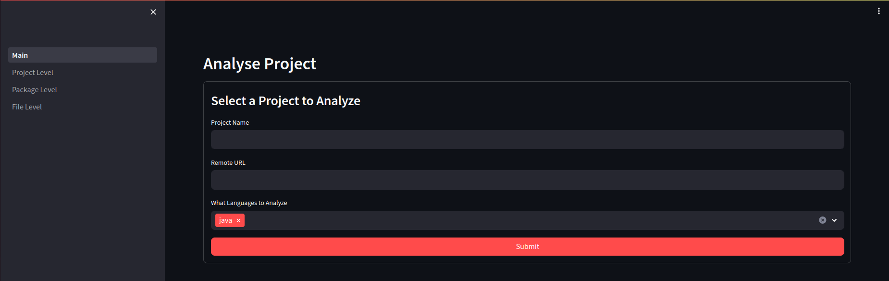

AutoFL


Automatic source code file annotation using weak labelling.
Setup
Clone the repository and the UI submodule autofl-ui by running the following command:
git clone --recursive git@github.com:SasCezar/AutoFL.git AutoFL
Optional Setup
To make use of certain feature like semantic based labelling functions, you need to download the model. For example, for w2v-so, you can download the model from here, and place it in the data/models/w2v-so folder, or a custom path that you can use in the configs.
Usage
Run docker the docker compose file docker-compose.yaml by executing:
docker compose up
in the project folder.
API Endpoint
You can analyze the files of project by making a request to the endpoint:
curl -X POST -d '{"name": "<PROJECT_NAME>", "remote": "<PROJECT_REMOTE>", "languages": ["<PROGRAMMING_LANGUAGE>"]}' localhost:8000/label/files -H "content-type: application/json"
For example, to analyze the files of https://github.com/mickleness/pumpernickel, you can make the following request:
curl -X POST -d '{"name": "pumpernickel", "remote": "https://github.com/mickleness/pumpernickel", "languages": ["java"]}' localhost:8000/label/files -H "content-type: application/json"
UI
The tool also offers a web UI that is available at the following page (when running locally): http://localhost:8501

For more details, check the UI repo.
Configuration
AutoFL uses Hydra to manage the configuration. The configuration files are located in the config folder. The main configuration file is main.yaml, which contains the following options:
- local: which environment to use, either local or docker. Docker is default.
- taxonomy: which taxonomy to use. Currently only gitranking is supported.
- annotator: which annotators to use. Default is simple, which allows good results without extra dependencies on models.
- version_strategy: which version strategy to use. Default is latest, which will only analyze the latest version of the project.
- dataloader: which dataloader to use. Default is postgres which allows the API to fetch already analysed projects.
- writer: which writer to use. Default is postgres which allows the API to store the results in a database.
Other configuration can be defined by creating a new file in the folder of the specific component.
Functionalities
- Annotation (UI/API/Script)
- File
- Package
- Project
- Batch Analysis (Script Only)
- Temporal Analysis (TODO)
- Classification (TODO)
Supported Languages
- Java
- Python (untested)
- C (untested)
- C++ (untested)
- C# (untested)
Development
Add New Languages
In order to support more languages, a new language specific parser is needed. We can create one quickly by using tree-sitter, and a custom parser.
Parser
The parser needs to be in the parser/languages folder.
It has to extend the BaseParser class, which has the following interface.
class ParserBase(ABC):
"""
Abstract class for a programming language parser.
"""
def __init__(self, library_path: Path | str):
"""
:param library_path: Path to the tree-sitter languages.so file. The file has to contain the
language parser. See tree-sitter for more details
"""
...
And the language specific class has to contain the logic to parse the language to get the identifiers. For example for Python, the class will look like this:
class PythonParser(ParserBase, lang=Extension.python.name): # The lang argument is used to register the parser in the ParserFactory class.
"""
Python specific parser. Uses a generic grammar for multiple versions of python. Uses tree_sitter to get the AST
"""
def __init__(self, library_path: Path | str):
super().__init__(library_path)
self.language: Language = Language(library_path, Extension.python.name) # Creates the tree-sitter language for python
self.parser.set_language(self.language) # Sets tree-sitter parser to parse the language
# Pattern used to match the identifiers, it depends on the Lanugage. Check tree-sitter
self.identifiers_pattern: str = """
((identifier) @identifier)
"""
# Creates the query used to find the identifiers in the AST produced by tree-sitter
self.identifiers_query = self.language.query(self.identifiers_pattern)
# Keyword that will be ignored, in this case, the language specific keywords as the query extracts them as well.
self.keywords = set(keyword.kwlist) # Use python's built in keyword list
self.keywords.update(['self', 'cls'])
A custom class that does not rely on tree-sitter can be also used, however, there are more methods from ParserBase that need to be changed. Check the implementation of ParserBase.
Disclaimer
The project is still in development, and it might not work as expected in some cases.
It has been developed and tested on Docker 24.0.7 for Ubuntu 22.04. While minor testing has been done on Windows and MacOS,
not all functionalities might work due to differences in Docker for these OSs (e.g. Windows uses WSL 2).
In case of any problems, please open an issue, make a pull request, or contact me at c.a.sas@rug.nl.
Cite
If you use this work please cite us:
Paper
@article{sas2024multigranular,
title = {Multi-granular Software Annotation using File-level Weak Labelling},
author = {Cezar Sas and Andrea Capiluppi},
journal = {Empirical Software Engineering},
volume = {29},
number = {1},
pages = {12},
year = {2024},
url = {https://doi.org/10.1007/s10664-023-10423-7},
doi = {10.1007/s10664-023-10423-7}
}
Note: The code used in the paper is available in the https://github.com/SasCezar/CodeGraphClassification repository. However, this tool is more up to date, is easier to use, configurable, and also offers a UI.
Tool
@software{sas2023autofl,
author = {Sas, Cezar and Capiluppi, Andrea},
month = dec,
title = {{AutoFL}},
url = {https://github.com/SasCezar/AutoFL},
version = {0.3.0},
year = {2023},
url = {https://doi.org/10.5281/zenodo.10255368},
doi = {10.5281/zenodo.10255368}
}